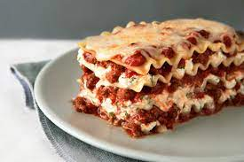

Lasagna

Description
This is a recipe for a simple and quick lasagna. It is based on the original italian recipe, making it a delicious and easy meal .
Ingredients
- Meat
- Onion
- Garlic
- Crushed tomatoes
- Tomato sauce
- Tomato paste
- Sugar
- Fresh parsley and basil leaves
- Pepper
- Salt
- Lasagna leafs
- Mozzerella, parmesan
Instructions
- Make the meat sauce
- Cook the leafs
- Layer the lasagna
- Cover with foil and bake
- Let the lasagna rest before serving